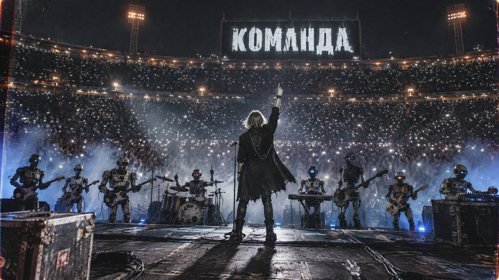
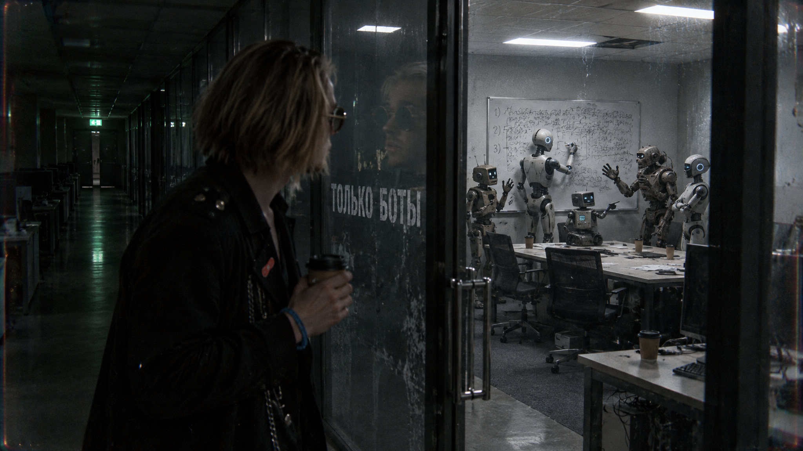
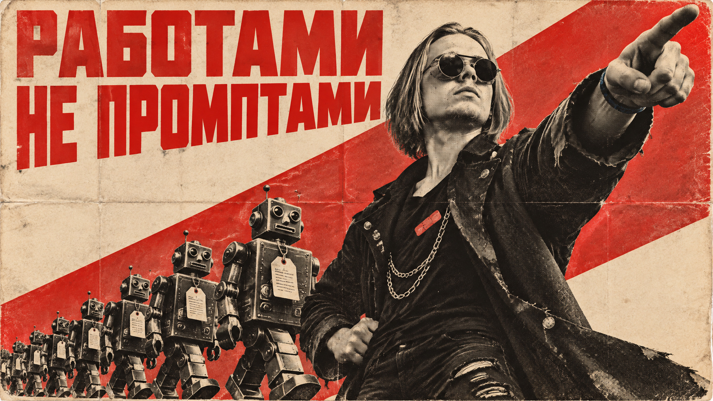

01
Скачать Grok Bot
Идёшь на x.ai/bot и качаешь приложение на компьютер. Есть под Windows и Mac.
- Тариф: Pro за $20, SuperGrok за $30, Teams за $40
- Если уже сидишь на Cursor Pro, SuperGrok или Teams - Grok Bot включён, отдельно платить не надо

Как собрать команду ботов-сотрудников: имя, должность, рутины, почта, база в Supabase и общий канал, где они раздают задачи друг другу. Все промпты копируются кнопкой.
▶ Смотреть видеоШесть вещей, каждая работает отдельно от остальных.
Заводить бота одной фразой: роль, имя, должность, аватар - всё разговором, без ключей и системных промптов
Отдавать боту почту: он сам подключает Gmail, читает входящие и пишет черновики твоим голосом
Складывать сделки и контент-календарь в Supabase - бот сам создаёт таблицы и заполняет их
Сажать ботов в общий канал, чтобы они передавали работу друг другу без тебя
Ставить рутины по расписанию: каждые два часа, каждый понедельник, раз в месяц - на компьютере бота в облаке
Мониторить X, Pinterest, распродажи и билеты через плагины и своих ботов
Десять шагов по порядку. Первые два обязательные, дальше собираешь тех ботов, которые нужны тебе.
Идёшь на x.ai/bot и качаешь приложение на компьютер. Есть под Windows и Mac.
Первый бот, которого стоит завести, - твоя точка входа: ты кидаешь ему задачи, он раздаёт их остальным. Настраивается просто разговором.
ты моя главная точка контакта. я кидаю тебе задачи, а ты раздаёшь их остальным ботам.
штаб
моя главная точка контакта. я скидываю задачи сюда, он выбирает нужного бота, отдаёт ему работу и приносит мне результат. сам работу не делает. коротко, просто, по-человечески. никогда не докладным тоном.
нарисуй себе аватар, который показывает, кто ты. в постапокалиптическом стиле, с безумной маской как из безумного макса.
Бот, который ведёт входящие, держит контент-календарь и переговоры с рекламодателями. Заводится одним сообщением, Gmail подключает сам.
тебя зовут Менеджер. ты ведёшь мою почту. пройди письма за последние две недели, разбери, какие письма мне приходят и как я на них отвечаю. дальше посмотри мою базу сделок в Supabase, там я веду рекламодателей. поставь рутину: каждые два часа в течение дня готовь черновики ответов на письма.
пройди по моим отправленным письмам и вытащи мой голос: как я здороваюсь, какой длины пишу, чем заканчиваю. дальше пиши так же.
Боту нужно куда-то складывать сделки. Заведи проект в Supabase, старт бесплатный. Таблицы бот создаст сам.
подключись к моей базе Supabase, там сделки с рекламодателями. если базы сделок ещё нет, создай таблицу сам и заполни её всем, что нашёл в почте.
заведи в моей базе Supabase вторую таблицу - контент-календарь. поля: название ролика, дата выхода, статус, рекламодатель. заполни тем, что выходит ближайшее время: НАЗВАНИЕ - ДАТА, НАЗВАНИЕ - ДАТА. дальше сверяйся с ней, когда отвечаешь рекламодателям: если на нужную дату уже стоит ролик, пиши, что место занято, и предлагай ближайшее свободное.

Сажаешь несколько ботов в один канал, даёшь один проект, и они передают работу друг другу, а не спрашивают тебя на каждом шаге.
давай создадим видео с нуля
Бот-исследователь. У Grok Bot есть плагин X, и Скаут ищет горячие темы для канала по расписанию, у меня в 10:00 и 19:00.
Бот, чья единственная работа - делать твою жизнь удобнее. Доступ к Google-календарю, в 8 утра разбирает день и собирает досье перед созвонами.
ты мой консьерж. заказывай еду, назначай встречи, разбирайся с бытовыми делами и предупреждай меня о том, что горит по времени. не просто смотри, делай.
Бот-строитель: идеи для приложений и сайтов - к нему. Плюс рутина: раз в месяц проходит по сайту и обновляет то, что протухло - счётчики, список свежих видео.
поставь рутину: раз в месяц проходи по сайту и обновляй цифры и список свежих видео.
Даёшь боту публичную доску в Pinterest, он вытаскивает твой стиль, смотрит на Reddit, как работают стилисты, и собирает список вещей по приоритетам.
тебя зовут Костюмер. вот моя доска в pinterest, она открыта: ССЫЛКА. разбери её и пойми мой стиль. потом посмотри на reddit, как персональные стилисты собирают людям гардероб. собери мне список вещей по приоритетам.
поставь рутину: каждый понедельник в 8 утра проверяй распродажи и присылай ссылки на вещи в моём стиле.
Как только начинаешь думать работами, а не промптами, направлений становится много.
